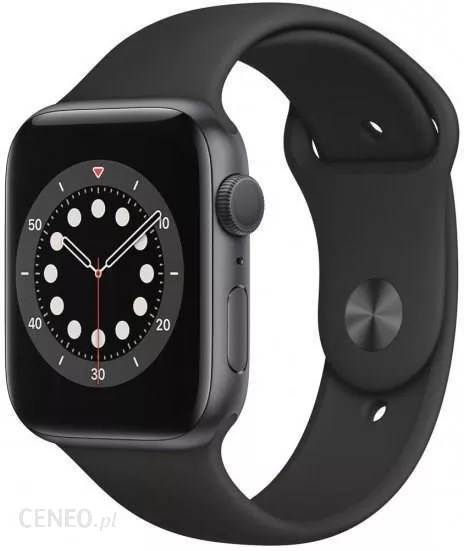

Apple Watch Series 6

Apple Watch Series 6 to siódma generacja inteligentnych zegarków firmy Apple, wydana we wrześniu 2020 roku. Zegarek działa na systemie operacyjnym watchOS 7 i oferuje wiele funkcji, takich jak monitorowanie aktywności fizycznej, powiadomienia z telefonu, odtwarzanie muzyki i możliwość wykonywania połączeń telefonicznych, a także wysyłania wiadomości tekstowych. Apple Watch Series 6 posiada wodoszczelność do głębokości 50 metrów, większy wyświetlacz niż poprzednie modele, a także wbudowany sensor EKG i detekcja upadków. Nowością w Apple Watch Series 6 jest monitorowanie poziomu tlenu we krwi, pomiar wysokości bezwzględnej dzięki zawsze włączonemu wysokościomierzowi, a także nowy, szybszy procesor S6.
Powrót